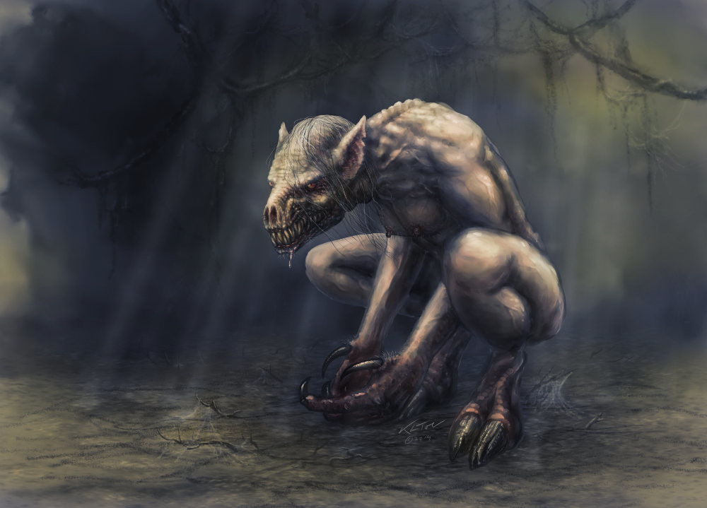

В затхлых подземельях, никогда не видевших. солнечного света, живут твари до того отчужденные, что не поклоняются богам и не служат хозяевам, а имеют страсть лишь к мертвой плоти. С этой целью гули подкапывают человеческие кладбища и питаются из могил. Бытует мнение, что некогда эти создания сами были смертными и произошли от людей, которые стали поедать плоть себе подобных и со временем обрели столь отвратительный облик.
Гули, или упыри, являют собой нечто среднее между человеком и собакой: тела их сгорблены, морды вытянуты, на чешуйчатых лапах торчат острые когти. В темноте у них сверкают красные, налитые кровью глаза, а остроконечные уши, кажется, слышат каждый шорох. Нос же хоть и сплющен, но чует так же хорошо, как и у других обитателей земных недр. Неизменно копаясь в могилах, они производят впечатление самое отталкивающее: все в налипших комьях земли, с капающей со слюнявой пасти кровью...
Однако гуди обитают не только на кладбищах: они также могут перемещаться между реальным миром и Страной Снов, используя магические туннели, расположенные глубоко под землей. Но что опаснее всего — они нападают на людей по ночам прямо в их домах! Особенно это касается тех, кто живет в старинных зданиях с подвалами, где часто устраивались колодцы и подземные ходы, которые будто бы ведут в никуда. Поднимаясь по ним, упыри иногда подменяют спящих в колыбелях детей: оставляют своих отвратительных отпрысков воспитываться у людей, в человечьих – забирают взамен, чтобы научить их питаться мёртвой плотью.
Уходя корнями в арабский фольклор, глубоко почитаемый Лавкрафтом, в собственном творчестве писателя впервые появляются в рассказе «Модель Пикмана» (Pickman’s Model, 1926), а затем подробно описываются в повести «Сновидческие искания неведомого Кадата» (The Dream-Quest of Unknown Kadath, 1927).
